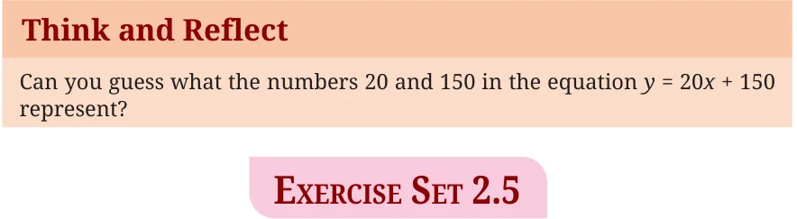

<!DOCTYPE html>
<html lang="en">
<head>
<meta charset="UTF-8">
<meta name="viewport" content="width=device-width,initial-scale=1">
<title>2.5 Linear Relationships — Introduction to Linear Polynomials</title>
<meta name="description" content="Class 9 Mathematics · Introduction to Linear Polynomials · 2.5 Linear Relationships">
<link rel="icon" href="data:image/svg+xml,<svg xmlns='http://www.w3.org/2000/svg' viewBox='0 0 100 100'><text y='.9em' font-size='90'>📘</text></svg>">
<link rel="stylesheet" href="../../../assets/book.css">
<link rel="stylesheet" href="https://cdn.jsdelivr.net/npm/katex@0.16.11/dist/katex.min.css" crossorigin="anonymous">
</head>
<body>
<header class="topbar">
<div class="topbar-in">
  <div class="crumb">
    <span class="c1"><a href="../../../index.html">Library</a> · <a href="../../index.html">Class 9 Mathematics</a></span>
    <span class="c2">Introduction to Linear Polynomials · 2.5 Linear Relationships</span>
  </div>
  <a class="tb-btn" data-nav="prev" href="../../02-introduction-to-linear-polynomials/08-exercise-2.4/index.html" title="Exercise 2.4">←</a>
  <details class="drawer"><summary class="tb-btn" title="Sections in this chapter">☰</summary>
<div class="drawer-panel"><div class="dh">Introduction to Linear Polynomials</div><a href="../01-introduction-2.1/index.html">2.1 Introduction</a><a href="../02-exercise-2.1/index.html">Exercise 2.1</a><a href="../03-linear-polynomials-2.2/index.html">2.2 Linear Polynomials</a><a href="../04-exercise-2.2/index.html">Exercise 2.2</a><a href="../05-exploring-linear-patterns-2.3/index.html">2.3 Exploring linear patterns</a><a href="../06-exercise-2.3/index.html">Exercise 2.3</a><a href="../07-linear-growth-and-linear-decay-2.4/index.html">2.4 Linear growth and linear decay</a><a href="../08-exercise-2.4/index.html">Exercise 2.4</a><a href="../09-linear-relationships-2.5/index.html" aria-current="page">2.5 Linear Relationships</a><a href="../10-exercise-2.5/index.html">Exercise 2.5</a><a href="../11-visualising-linear-relationships-2.6/index.html">2.6 Visualising linear relationships</a><a href="../12-exercise-2.6/index.html">Exercise 2.6</a></div></details>
  <a class="tb-btn" data-nav="next" href="../../02-introduction-to-linear-polynomials/10-exercise-2.5/index.html" title="Exercise 2.5">→</a>
  <button class="tb-btn" data-theme-toggle title="Toggle light / dark" aria-label="Toggle light or dark theme">◐</button>
</div>
<div class="progress"><span style="width:16.5%"></span></div>
</header>
<main class="wrap">
<div class="sec-head">
  <p class="eyebrow"><a href="../index.html">Chapter 2 · Introduction to Linear Polynomials</a></p>
  <h1>2.5 Linear Relationships</h1>
  <p class="sec-meta">Textbook pages 11–12 · 1 figure</p>
</div>
<article class="prose">
<p>A linear relationship represents the relationship between two variables x and y, and can be expressed as \(y =\) ax \(+ b\). Let us revisit the growing pattern of square tiles in Fig. 2.4. If x represents the number of the term and y represents the numbers of square tiles, then the ­linear relationship between x and y is expressed</p>
<div class="mathblock"><p>as \(y = 2x - 1\).</p></div>
<p>Sometimes, we may be required to find the linear relationship between two quantities. Example 11: A telecom company charges a fixed monthly fee and an additional cost per GB of the internet data used. A student observes that when she used 10 GB, her bill was `350. When she used 20 GB, her bill was `550. If the monthly bill y depends on the amount of data used, x (in GB), according to the relation \(y =\) ax \(+ b\), find the values of a and b. Note that \(x =\) number of GB of the internet data used and \(y =\) total monthly cost in Rupees. To find the linear relationship \(y =\) ax \(+ b\), we note that when \(x = 10\), \(y = 350\). Also, when \(x = 20\), \(y = 550\). We substitute these in \(y =\) ax \(+ b\) to arrive at the following equations.</p>
<div class="mathblock"><p>\(350 = 10a + b\) and \(550 = 20a + b\)</p></div>
<p>We solve these as follows: Let \(b = 350 - 10a\) (from the first equation). We substitute this in the second equation to obtain</p>
<div class="mathblock"><p>\(550 = 20a + (350 - 10a)\)</p></div>
<p>Thus, \(550 = 10a + 350\) or \(10a = 200\). So, \(a = 20\). This leads to</p>
<div class="mathblock"><p>\(b = 350 - 10a = 350 - 200 = 150\).</p></div>
<p>We substitute the values of a and b in the equation \(y =\) ax \(+ b\) to</p>
<div class="mathblock"><p>obtain \(y = 20x + 150\).</p></div>
<p>Thus, \(y = 20x + 150\) represents the linear relationship between y, the bill amount in Rupees, and x, the number of GB of the internet data used.</p>
<figure class="fig wide"></figure>
<ul class="qlist">
<li><span class="mk">1.</span><span class="lt">A learning platform charges a fixed monthly fee and an</span></li>
</ul>
<p>additional cost per digital learning module accessed. A student observes that when she accessed 10 modules, her bill was `400. When she accessed 14 modules, her bill was `500. If the monthly bill y depends on the number of modules accessed, x, according to the relation \(y =\) ax \(+ b\), find the values of a and b.</p>
<ul class="qlist">
<li><span class="mk">2.</span><span class="lt">A gym charges a fixed monthly fee and an additional cost per hour</span></li>
</ul>
<p>for using the badminton court. A student using the gym observed that when she used the badminton court for 10 hours, her bill was `800. When she used it for 15 hours, her bill was `1100. If the monthly bill y depends on the hours of the use of the badminton court, x, according to the relation \(y =\) ax \(+ b\), find the values of a and b.</p>
<ul class="qlist">
<li><span class="mk">3.</span><span class="lt">Consider the relationship between temperature measured in</span></li>
</ul>
<p>­degrees Celsius ( \(^{\circ}\) C) and degrees Fahrenheit ( \(^{\circ}\) F), which is given by \(^{\circ} C = a ^{\circ} F + b\). Find a and b, given that ice melts at 0 degrees Celsius and 32 degrees Fahrenheit, and water boils at 100 degrees Celsius and 212 degrees Fahrenheit. (Hint: When \(^{\circ} C = 0\), \(^{\circ} F = 32\) and when \(^{\circ} C = 100\), \(^{\circ} F = 212\). Use this ­information to find a and b, and thus, the linear relationship ­between \(^{\circ} C\) and \(^{\circ}\) F.)</p>
<h2 id="s-2-6-visualising-linear-relationships">2.6 Visualising linear relationships</h2>
<p>As we have seen in many examples in this chapter, a linear pattern or relationship can be expressed in the form of an equation \(y =\) ax \(+ b\). Now we shall learn to plot such an equation as a straight line. To plot a linear equation, we need to identify any two points on the line. For example, to plot \(y = 2x + 1\), we may identify two points as follows:</p>
</article>
<nav class="pager"><a class="" data-nav="prev" href="../../02-introduction-to-linear-polynomials/08-exercise-2.4/index.html"><span class="dir">← Previous</span><span class="t">Exercise 2.4</span><span class="ch">Introduction to Linear Polynomials</span></a><a class="nx" data-nav="next" href="../../02-introduction-to-linear-polynomials/10-exercise-2.5/index.html"><span class="dir">Next →</span><span class="t">Exercise 2.5</span><span class="ch">Introduction to Linear Polynomials</span></a></nav>
</main><footer class="site">Generated from the source textbook PDFs · text, figures and exercises belong to their respective publishers.</footer><script defer src="https://cdn.jsdelivr.net/npm/katex@0.16.11/dist/katex.min.js" crossorigin="anonymous"></script>
<script defer src="https://cdn.jsdelivr.net/npm/katex@0.16.11/dist/contrib/auto-render.min.js" crossorigin="anonymous"
  onload="renderMathInElement(document.body,{delimiters:[
    {left:'\\(',right:'\\)',display:false},
    {left:'$$',right:'$$',display:true},
    {left:'\\[',right:'\\]',display:true}],throwOnError:false,ignoredTags:['script','noscript','style','textarea','pre','code']})"></script>
<script src="../../../assets/book.js"></script>
</body>
</html>
